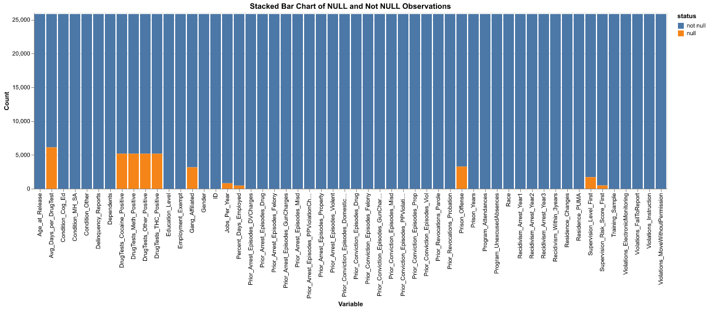
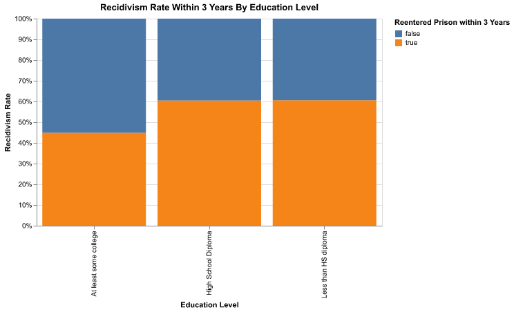
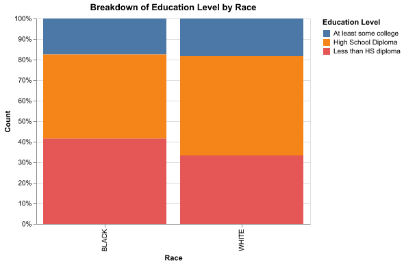

Final Project Write-Up
Data
For my project, I am interested in looking at the relationship between education and recidivism rates. One of the major challenges of the prison complex is that individuals are rarely arrested just once–within one year, 43% of formerly incarcerated individuals are rearrested and within 10 years, 82% are rearrested at least once (Recidivism of Prisoners Released in 24 States in 2008: A 10-Year Follow-Up Period (2008-2018), Bureau of Justice Statistics). There are numerous factors contributing to this issue, such as lack of resources out of prison, including jobs and housing, substance use, and the inability to leave negative living situations. A key policy issue today is determining what policies we can enact to reduce recidivism rates.
One possible solution to reduce recidivism is improving education. Research shows that inmates who participate in correctional education programs have 43 percent lower odds of returning to prison than those who do not, and that every dollar spent on prison education saves four to five dollars on the costs of re-incarceration. (Education and Vocational Training in Prisons Reduces Recidivism, Improves Job Outlook, Rand Corporation)
To start, I want to create some graphs to visualize the relationship between education levels, behavior in school, and recidivism. This is simply a preliminary step to see if there is a relationship there, this is not a quantitative test or experiment to see if there is a causal relationship between the two.
I will be using two datasets. The first looks at prison in general and the second looks at juvenile deliquency. I chose these two as we can see the long-term effects of education through the first dataset and the connection between current behavior in school and juvenile delinquency in the second.
The first comes from the NIJ Recidivism Challange, in which the National Institute of Justice released the data on roughly 26,000 individuals from the State of Georgia released from Georgia prisons on discretionary parole to the custody of the Georgia Department of Community Supervision (GDCS) for the purpose of post-incarceration supervision between January 1, 2013 and December 31, 2015. This data was released publicly to challenge analysists to predict recividism based on the demographic information provided, including education level.
The second dataset comes from a state-wide sample of Florida juveniles who completed probation supervision between 2015 and 2018. The study the dataset comes from examines trajectories of risk and protective factors throughout probation supervision, whether such trajectories affect the likelihood of recidivism, and how community context influences those relationships.
Examination of Data
Dataset #1
I first started examining the NIJ dataset by taking a look at null values. I wanted to see where null values in the dataset where and how I should treat them when I began analysis.

From this bar chart we can see that approximately 1/5 of the data around drug tests is N/A, including ‘Avg_Days_per_DrugTest’, ‘DrugTests_Cocaine_Positive’, ‘DrugTests_Meth_Positive’, ‘DrugTests_Other_Positive’, and ‘DrugTests_THC_Positive’. This is good to know moving forward with the data analysis. If I run any analysis with these variables, I will not include the NA variables.
Next, I looked at the relationship between education level and the recidivism rate within 3 years.

From the normalized bar chart, we can see that there isn’t a difference in the recidivism rate between those who have a high school diploma and those who don’t. This indicates that we should explore those variables more, because it is strange for them to be equal. But we can also see that those with at least some college have approximately a 12% lower recividism rate within 3 years than those with a high school diploma or less than a high school diploma. This does not necessarily mean that college itself causes lower rates of recidivism–this is not an RCT and there could be self-selection factors that leads to those with some college going back to prison at lower rates. But this preliminary chart does give us reason to examine the relationship between education and recidivism closer.
For the final chart for this dataset, I looked at education levels in the dataset broken down by race. This dataset only includes Black and White as races. This could be a red flag for the dataset, but is likely because this dataset as a challenge for analysts and kept several identitying features out.

This graph is helpful in visualizing the difference in race and education. From this we can see that those who are Black have slighlty higher rates of not having a high school diploma than those who are White in prison. As we further analyze the relationship between education and race, we should be aware of the differences between race.
Dataset #2
The next dataset I used for analysis in my shiny app. Below are descriptions of the varaibles I used.
In the dataset, three separate measures of recidivism were used to allow for more robust findings: rearrest, readjudication, and placement. Rearrest meant arrest for a new offense within 365 days of the date the youth completed their community-based disposition. Readjudication was measured according to the official definition of recidivism for the FDJJ as an adjudication or adult conviction for an offense that occurred within 365 days of the youth completing the community-based disposition. Placement included assignment of a youth to a juvenile justice residential facility or adult prison for an offense that occurred within 365 days of the youth completing community-based dispositions.
The measures for school status are as follows–a binary measure of those who are enrolled in high school, those who have dropped out of school, and those who have received their high school diploma/GED. Although the measures for enrolled and dropped out of high school appear to measure the same thing, there is some difference in the individuals they capture–19.7% of the sample is not enrolled in school, while only 15.1% have dropped out. Additional measures of school status are recent school conduct, recent school attendance, and recent academic performance, each ranging in values between 1-5, with one indicating exemplary behavior and 5 indicating concerning behavior.
Shiny App
For the shiny app, I created dynamic plots measuring the education measures against the recivdivism measures in the juvenile dataset. Through this app, we can get a better idea of which education measures seem to have the highest correlation with recidivism.
Overall, the recividism measure rearrested within 1 year has a stronger correlation with the education measures than readjudicated within 1 year or placement/incarceration within 1 year. This could be due to the fact that there are higher rates of rearrest (51.6%) than redjudication (35.9%) or replacement (10.5%). Also, we can see with each graph that problems in school are correlated to a higher rate of recidivism.
Future Research
We can see from this preliminary look at this data that there does appear to be a connection between education and recidivism. Whether that is because education itself contributes to lower rates of recidivism or there is overlap in those who perform well in school and those with lower recidivism rates is unclear from the work I have done so far. Further research, including RCTs, will be needed to see how education affects recidivism. In the future research, researchers should also keep in mind how other demographics come into play, including race and income.
It is also crucial for future research and policy design to account for a broad range of demographic factors. For instance, if Black individuals in prison have lower rates of high school diploma attainment compared to their White counterparts, prioritizing college programs over GED programs could inadvertently exclude those who need foundational education support.